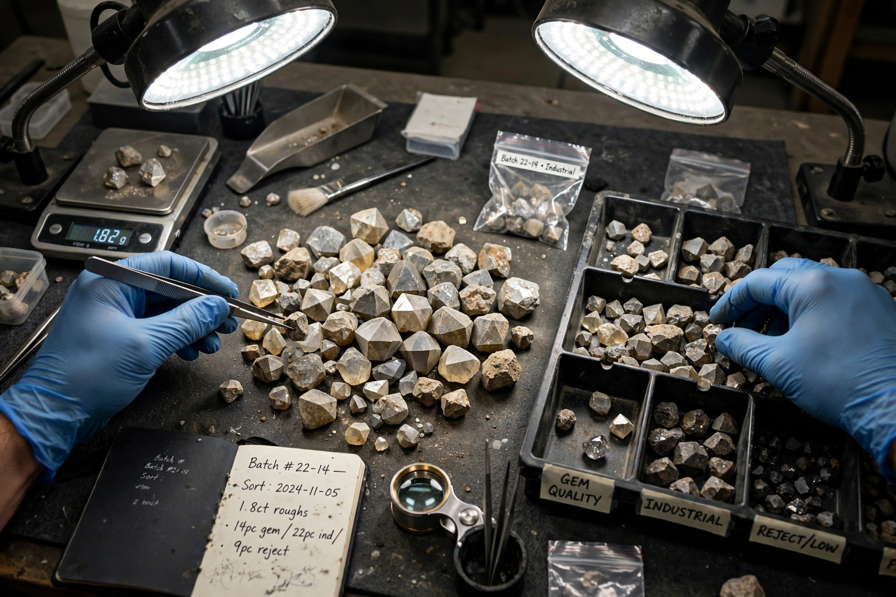

From Wikipedia, the free encyclopedia

| Type | International certification scheme |
|---|---|
| Established | Negotiations from May 2000 (Kimberley, South Africa); scheme effective 1 January 2003 |
| Purpose | Prevent trade in conflict diamonds ("blood diamonds") |
| Legal basis | UN General Assembly Resolution 55/56 (2000) |
| Participants | 80+ countries (EU counted as one participant) |
The Kimberley Process is a joint initiative of governments, the diamond industry and civil society created to stem the flow of conflict diamonds — rough diamonds used by rebel movements to finance wars against legitimate governments. Its core mechanism, the Kimberley Process Certification Scheme (KPCS), was adopted at Interlaken, Switzerland, in November 2002 and took effect on 1 January 2003.
During the 1990s, diamond-fuelled civil wars in Angola, Sierra Leone, Liberia and the Democratic Republic of Congo drew international attention, notably through the UN's Fowler Report (2000) and campaigns by NGOs such as Global Witness and Partnership Africa Canada. In May 2000, diamond-producing states of southern Africa met in Kimberley, South Africa — the historic diamond-mining city — to design a certification system, leading to a UN mandate later that year.
Under the scheme, each shipment of rough diamonds crossing an international border must be sealed in a tamper-resistant container and accompanied by a forgery-resistant certificate guaranteeing that the stones are conflict-free. Participating countries may trade only with other participants, must pass national legislation implementing the controls, and submit to peer-review visits and annual statistical reporting. The industry, coordinated by the World Diamond Council, supports the scheme with a self-regulated "system of warranties" invoiced through the supply chain.
The Process is credited with helping to reduce conflict diamonds to a small fraction of world trade, but it has faced persistent criticism: its definition covers only rebel-financed stones, not abuses by governments; decisions require consensus, weakening enforcement; and disputes over Zimbabwe's Marange fields led Global Witness, one of its founding NGOs, to leave the scheme in 2011, declaring it no longer fit for purpose. Reform efforts have continued amid debate about expanding the definition of a conflict diamond.